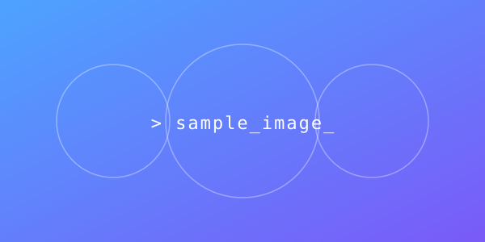

Post template
This file is a living template. It exercises every element the stylesheet supports so you can see what you get. Copy the folder, rename the slug, then delete the sections you don’t need.
Prose and inline elements
A paragraph may contain strong emphasis,
italicized text, highlighted passages,
struck-through text, inserted text,
external links,
inline code snippets, keyboard hints like
Ctrl+C, sample output
ok, abbreviations like
HTML, and
math-adjacent notation such as H2O or E=mc2.
Footnote references1 live here too.
Images and figures
A standalone image spans the content column:

A <figure> adds a caption:
Lists
Unordered
- First item, top level.
-
Second item, with a nested list:
- Nested A
- Nested B
- Third item.
Ordered
- Step one.
- Step two.
- Step three.
Definition list
- Slug
- Kebab-case folder name that becomes the URL path.
- Lede
- The opening paragraph that sells the read.
- Meta
- Date, author, tags. Rendered right below the title.
Tables
| File | Purpose | Required |
|---|---|---|
index.html |
The article itself. | Yes |
styles.css |
Per-post stylesheet. | Yes |
script.js |
Interactivity, if any. | No |
assets/ |
Images, diagrams, downloads. | No |
Code
A one-liner in a <pre> block:
find blog -mindepth 2 -maxdepth 2 -name index.htmlMulti-line code, with a language hint in a comment:
// javascript
const posts = await fetch('/blog/')
.then(r => r.text())
.then(html => new DOMParser().parseFromString(html, 'text/html'));
for (const a of posts.querySelectorAll('a[href^="./"]')) {
console.log(a.href);
}Quotes
Write as if the post will outlive the site around it.
Callouts and details
Click to reveal the long version
Hidden content is good for optional depth: derivations, footnote expansions, full error messages, etc. Collapsed by default so the main flow stays tight.
Horizontal rule
Use <hr> to mark a thematic break.
Content continues after the break.
Headings, continued
Third-level heading
Short section.
Fourth-level heading
Even shorter section.